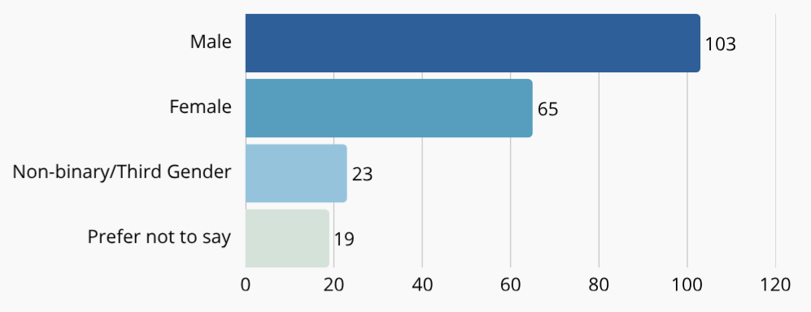
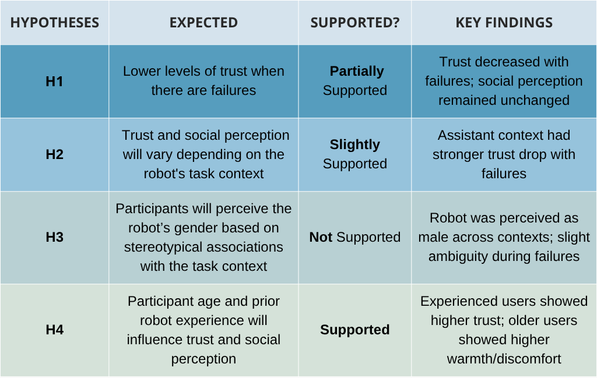
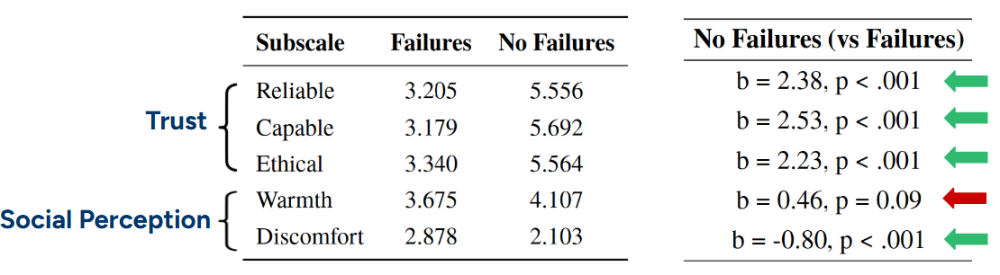
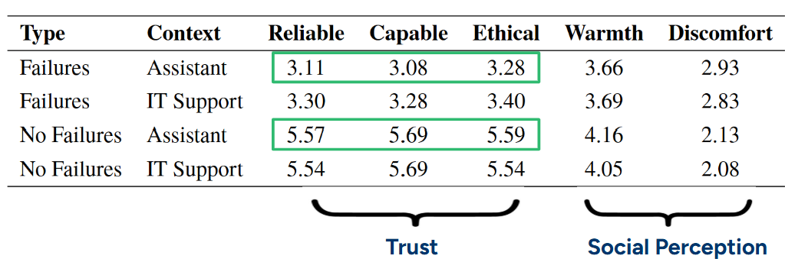
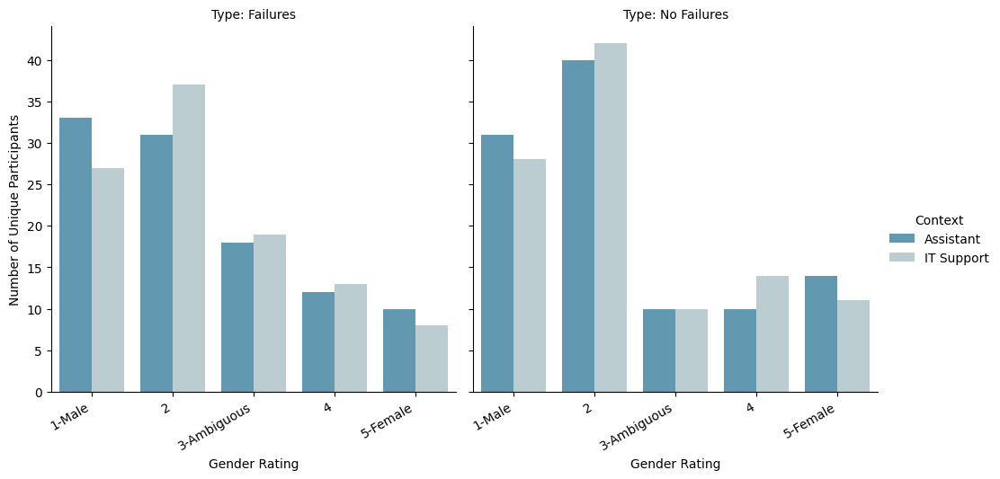
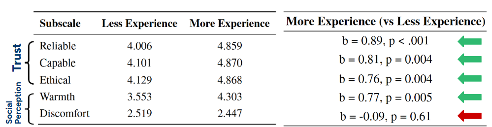
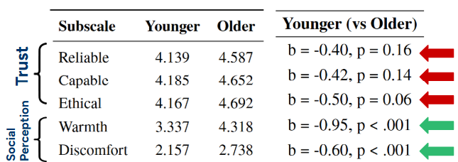
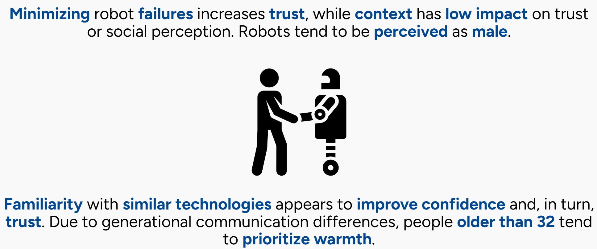
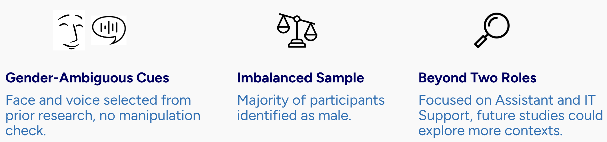

OVERVIEW
As artificial intelligence and social robots become more common in daily life, their success depends not only on technical performance but also on how humans perceive and interact with them. People naturally anthropomorphize robots, projecting traits and social expectations, especially when robots have cues like voice, facial expressions, or body language. These design choices, particularly related to gender, influence perceptions of trust, competence, and role suitability. Feminist robot studies have highlighted how gendered designs can reinforce harmful stereotypes, promoting calls for more inclusive and ethically responsible design approaches.
OBJECTIVE
While previous research has focused on male and female robot personas, little is known about how users respond to gender-ambiguous robots. This study explores how trust and perception are shaped by a gender-ambiguous robot's performance and task context, considering user characteristics like age and previous experience with robots. By doing so, it challenges traditional gender norms in robot design and advocates for more socially aware and inclusive human-robot interaction practices.
PROBLEM STATEMENT
"How do user interactions with a gender-ambiguous social robot vary with task performance and task context?"
ITEM
Master's Thesis Project
METHODS
Survey, Quantitative Research, Statistical Analysis
TOOLS
Furhat Robot, Python, Amazon Mechanical Turk, Kotlin
PRESENTATION
SlidesTEAM
Individual
PERIOD
February 2025 - August 2025
Hypotheses
To structure the study, these hypotheses have been defined. These reflect the expectations about how failures, task context, and participant differences affect trust, gender perception, and social perception of the robot:
METHODOLOGY
The experiment involves defining two different contexts that have been determined to be stereotypically more associated with a role that a male would perform, and another role that is more associated with a task a female would do. Then, recording videos of different users interacting with the robot, in half of the videos the robot will perform without failures, and in the other half with failures. Followed by creating a survey and recruiting participants to watch and rate the different interactions. Lastly, a statistical analysis will be performed to come up with conclusions.
Experiment Design
Robot Selection
- Face: Ted
- Voice: Amazon Polly’s “Kendra” voice with a lowered pitch
Context Design
To examine how task stereotypes influence perceptions of a gender-ambiguous robot, two contexts were selected based on common gender associations in past research:
- Assistant: perceived as a female task, due to its frequent use in voice assistant design and associations with caregiving and support.
- IT Support: perceived as a male task, due to its commonly societal associations with technology and robots.
Robot Behavior & Video Setup
For each context, Furhat was programmed to behave in 2 ways:
- Robot functioning with technical (speaking slowly and crashing) and interaction (providing the user nonsensical responses)
failures . - Robot functioning without any failures while responding to the user.
Video Example
Survey Design
- A survey was used to enable statistical analysis, apply validated scales (e.g., trust, social perception), and ensure comparability with prior HRI studies.
- Built on Amazon Mechanical Turk with custom HTML/CSS, participants were randomly shown either 4 failure or 4 no-failure videos.
- After giving consent and sharing demographics, participants rated trust, social perception, and the robot’s perceived gender after each video.
Metrics
The following metrics were used to measure trust, social perception, and the robot’s perceived gender. Each used a Likert scale, and the items within each scale were randomized to reduce order effects.
Attention Checks
To ensure participant attention, an open-ended question was included among the trait items asking participants to describe what the robot in the video is doing. Additionally, each video rating included a randomly placed, unrelated word (e.g. apple, zebra, broccoli, and banana) within the MDMT (Multi-Dimensional Measure of Trust) scale. Participants were expected to select “Does Not Fit” for these words, serving as an attention check.
Participants
The sample size was calculated using simulation power analysis, assuming a moderate effect size (Cohen’s d = 0.5), the study design with 210 participants and 4 repeated measures (4 videos) per participant achieves approximately 91% power to detect condition effects at α = 0.05.
- Participants were recruited through Amazon Mechanical Turk.
- Total of 210 participants: 105 in the no robot failures condition and 105 in the robot failures condition
- Each participant had 45 minutes to complete the survey.
- Age range: 20 to 69
Participants' Gender Identification:
Data Analysis
All analyses and visualizations were conducted in Python using packages such as pandas, statsmodels, pingouin, and seaborn.
Data Preparation
- Dataset was imported from a processed Excel file.
- "None" values were replaced with missing data indicators (NA).
- Several columns were cast to categorical types: including participant demographics (gender, age, and experience with robots), experimental conditions (type: failures/no failures, context, and the gender of the user interacting with the robot), and participant IDs.
Metrics Calculations
- First, to assess the internal consistency of the rating subscales, Cronbach’s alpha was computed for each using the pingouin package in Python. All subscales demonstrated high internal reliability, with alpha ≥ 0.81.
- Next, the mean was calculated for each of the five subscales of the MDMT and RoSAS scales.
Statistical Modeling
- To assess the effects of experimental manipulations and participant characteristics, linear-mixed-effect models were fitted using the statsmodels package.
- Participant ID was included as a random effect to account for repeated measures.
- Then, various combinations of fixed effects, presented in the results, were tested to identify statistically significant difference.
RESULTS
Results Summary
H1: Trust and social perception will decrease when the robot has failures
Mean Scores for Failures vs No Failures
- Trust: Significant difference in all variables.
- Social perception: Significant difference in discomfort, not in warmth.
H2: Trust and social perception will vary depending on the robot’s task context
Mean Scores by Type and Context
- No significant difference - Assistant vs IT Support.
- Assistant context had stronger drop trust when the robot had failures.
- Suggest gender-role biases in how trust is affected.
H3: Participants will perceive the robot’s gender based on stereotypical associations with the task context
Distribution of Perceived Robot’s Gender by Performace and Context
- Robot was perceived as male across contexts.
- Slight ambiguity when the robot had failures.
- Reflected the ”male-by-default” trend.
H4: Participant age and prior experience with robots will influence trust and social perception
Pior Experience with Robots
- Participants with prior experience showed higher levels of trust.
Participant's Age
- The group of older participants (>32) showed higher rates in social perception.
CONCLUSIONS
LIMITATIONS AND FUTURE WORK
REFLECTION
Persona Takeaways
- I learned the importance of carefully designing experimental conditions and hypotheses to capture complex user attitudes toward emerging technologies, such as AI and robots.
- The main challenge was selecting a voice and face that were truly gender-ambiguous, as this is a relatively new and underexplored topic.
- Exploring the impact of gender ambiguity in robots expanded my understanding of social biases and stereotypes in technology design, which deepened my empathy and critical thinking as a UX researcher.
- Overall, this project reinforced my passion for combining technical research with human-centered design, and it motivated me to further explore how AI and robotics can be developed responsibly to promote positive user experiences.